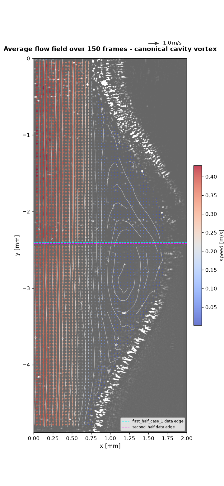
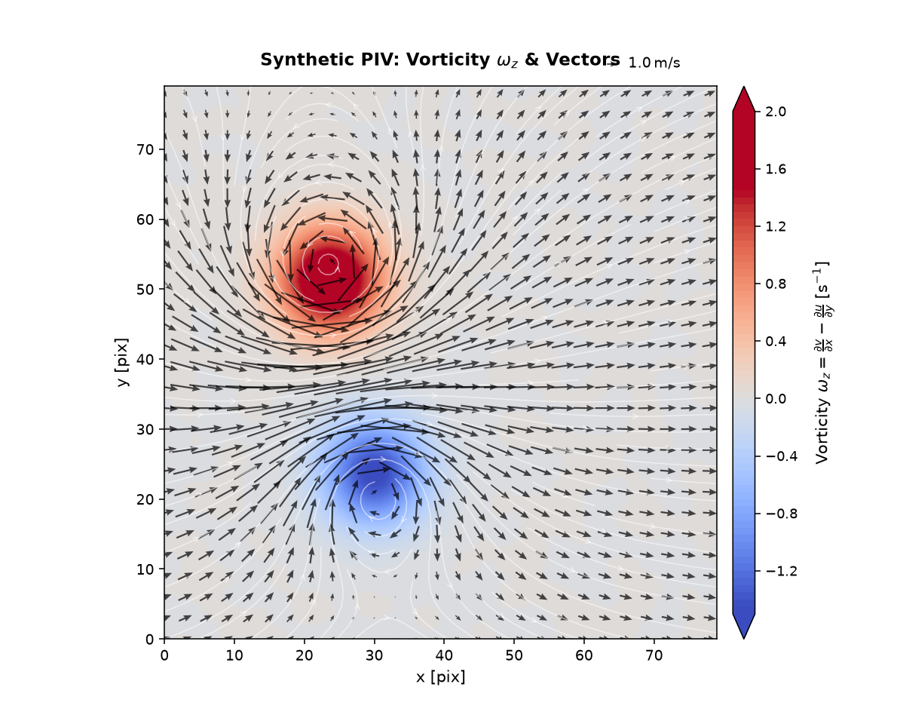

PIVPy Visualization & Animations
PIVPy provides an intuitive, publication-ready visualization and animation suite for particle image velocimetry (PIV) vector fields and derived flow diagnostics.
Overview
The primary visualization entry points are:
pivpy.graphics.plot(andxarray.Dataset.piv.plot): High-level zero-effort publication-quality figure combining smooth scalar fluid contours (vorticity, speed, KE), streamlines, auto-scaled vector arrows, colorbar, and reference arrow key.pivpy.graphics.animate(andxarray.Dataset.piv.animate): High-performance interactive and exportable flow animations using in-place vector artist updates (quiver.set_UVC) and dynamic fluid gradient tracking.pivpy.graphics.quiver/xarray.Dataset.piv.quiver: Clean vector quiver plots with subsampling, scaling, and custom arrow colors.pivpy.graphics.streamplot/xarray.Dataset.piv.streamplot: Flow streamlines tracing instantaneous flow trajectories.pivpy.graphics.showf/xarray.Dataset.piv.showf: PIVMat-compatible multi-purpose field viewer.pivpy.graphics.to_movie/xarray.Dataset.piv.to_movie: Direct batch movie file exporter for time-series datasets.
Try it live
The two cells below run right here in the page (via marimo + Pyodide) -- drag the slider and the plot redraws immediately.
High-Level Plotting (ds.piv.plot)
Zero-effort publication-grade visualization out-of-the-box:
import matplotlib.pyplot as plt
import pivpy.pivpy # registers Dataset.piv accessor
from pivpy import synthetic
# Load data or generate a synthetic 2D turbulence field
ds = synthetic.multivortex(n_frames=1, n=128, n_vortices=8, two_d=True, seed=42)
# Render with one call
fig, ax = ds.piv.plot()
plt.show()
 { width="80%" }
{ width="80%" }
Customizing Visual Layers
All layers (background contour, quiver arrows, streamlines, color limits, Gaussian smoothing) can be tailored or toggled:
# Velocity magnitude background with vectors only (no streamlines)
fig, ax = ds.piv.plot(
background="mag", # 'vorticity' (default), 'mag', 'ke', 'divergence', or None
streamlines=False, # toggle flow streamlines
quiver=True, # toggle velocity vectors
blur=1.5, # Gaussian smoothing sigma for smooth fluid contours
arrow_scale=0.75, # custom vector arrow scale
arrow_color="#1a1a1a", # custom arrow color
arrow_alpha=0.8, # arrow transparency
title="Velocity Magnitude & Vectors",
)
Worked Example: Image Background + Streamlines + Colored Quiver
This is the full pattern for the kind of figure that shows up in real PIV work: raw camera frame underneath, a colored quiver on top, streamlines to show the flow topology at a glance, and a correctly-sized colorbar - here revealing a canonical recirculation (cavity) vortex near a wavy channel wall, averaged over 150 frames to smooth out turbulent fluctuations:

{ width="70%" }Every argument in the call that produced it, explained:
fig, ax = ds.piv.plot(
background="image", # (1) what to paint behind the vectors
image=raw_frame, # (2) the actual 2D grayscale array to show
image_extent=(0, 2.0, -4.9, 0), # (3) physical (left, right, bottom, top)
image_cmap="gray", # (4) colormap for the *image*, not the data
image_alpha=0.6, # (5) how much the image shows through
quiver=True, # (6) draw velocity arrows
color_by="mag", # (7) color the arrows by speed
cmap="viridis", # (8) colormap for whatever is colored (mag here)
arrow_scale=None, # (9) None = auto-scaled, no overlap
arrow_width=0.004, # (10) shaft thickness
skip=7, # (11) draw every 7th vector (density)
streamlines=True, # (12) trace flow topology - this is what
# actually reveals the vortex cleanly,
# arrows alone rarely do
colorbar=True, # (13) see "Getting the colorbar right" below
title="Average flow field over 150 frames - canonical cavity vortex",
)
# ax is a normal matplotlib Axes - anything not covered by piv.plot()'s own
# arguments is just ordinary matplotlib on top of the returned (fig, ax):
ax.axhline(-2.41, color="cyan", linewidth=1.0, linestyle="--", label="camera A edge")
ax.axhline(-2.42, color="magenta", linewidth=1.0, linestyle="--", label="camera B edge")
ax.set_xlim(0, 2)
ax.legend(fontsize=7, loc="lower right")
Row-by-row reasoning:
- (1)-(5)
background="image"family - use this whenever you have the real camera frame (or a photo, a schematic, anything raster) and want vectors drawn on top of it, instead of a synthetic scalar field like vorticity.image_extentmust be given in the same physical units as yourx/ycoordinates - if you get the vectors and the picture misaligned, this tuple is almost always the culprit.image_alpha < 1keeps the picture visible without it fighting the arrow colors for attention. - (6)-(11) the quiver itself -
color_by="mag"(or"vorticity", or any variable name in the dataset) colors each arrow by that quantity; leave itNonefor plain single-color arrows viaarrow_color.arrow_scale=Noneis almost always the right starting point - it auto-picks a scale so neighboring arrows at your chosenskipdon't overlap. Only override it once you've looked at the auto result and know which direction (shorter/longer) you want, and be aware that one global scale can't make both a fast primary flow and a much slower internal recirculation clearly visible at once - if the ratio between your fastest and slowest region is large (as it is inside a recirculation zone), lengthening the scale to see the slow region will make the fast region's arrows overlap into an unreadable wash. In that case, let the streamlines carry the recirculation's shape (they don't have this problem) and treat the arrows as directional context for the dominant flow. - (12)
streamlines=True- this is doing the real work of showing the vortex in the image above. Arrows are inherently a "one sample point at a time" view; streamlines integrate the field and reveal closed recirculation loops that are easy to miss by eye in a quiver plot alone. - (13) Getting the colorbar right -
colorbar=True(the default) is almost always what you want, and as of this release it's safe to leave on even when you set bothbackground=andcolor_by=to the same quantity (e.g. both"mag") -plot()now detects that and only draws one colorbar instead of two redundant ones stacked on top of each other. It's also now sized to match your axes' actual rendered height regardless of aspect ratio, so a tall, narrow channel or a wide, short wake no longer gets a colorbar several times taller (or shorter) than the plot itself - previously this required manually replacingcolorbar=Truewithcolorbar=Falseand drawing your own. If you do want two colorbars (e.g.background="vorticity"colored one way,color_by="mag"colored another), that still works exactly as before - the redundancy check only fires when they'd actually show the same thing.
Using marimo for Interactive Parameter Tuning
Static code-and-rerun is fine for a final figure, but tuning skip,
arrow_scale, background, or a colormap by trial and error is much
faster with live sliders than by editing and re-running a script by hand.
marimo notebooks are a natural fit for this because
every cell re-runs automatically when a slider it depends on changes - you
drag, the plot redraws, no "run cell" click needed.
A minimal tuning panel for ds.piv.plot():
A few practical notes from real use:
- Keep
color_byandbackgroundmutually exclusive unless you deliberately want two colorbars (see above) - the patterncolor_by=None if background_dd.value != "none" else "mag"in the second cell is the simplest way to enforce that from a single dropdown. - Reuse one slider across multiple plot cells if you're comparing, say, a plain scalar-field view and an image-overlay view side by side - marimo reruns every cell that references the slider, so both plots stay in sync automatically without extra wiring.
- Derive dependent values in their own cell rather than recomputing
them inline in the plotting cell - e.g. if you're driving
arrow_scalefrom a "relative length" slider (see the worked example above for why you'd want that), compute the actual scale value in a small cell of its own so it's inspectable on its own, and so the plotting cell stays readable. ds.piv.plot(ax=...)lets you pre-create the figure at your intended final size (plt.subplots(figsize=(6, 13))for a tall channel, say) before callingplot(), instead of resizing the returned figure afterward - resizing after the fact stretches an already-laid-out figure unevenly (colorbar included), while passing a pre-sizedax=in gets everything scaled correctly from the start.
Synthetic Data: Freestream + Vortex Pair
pivpy.synthetic.freestream_vortex_pair() builds a uniform freestream with one
or more regularized point vortices superimposed - useful for testing
vorticity/Q-criterion code or for a quick demo plot without any real data:
from pivpy import synthetic
ds = synthetic.freestream_vortex_pair(n=80, noise_std=0.05, seed=42)
# pre-filter (denoise) BEFORE differentiating - see tip 1 below
ds = ds.piv.filterf([1.2, 1.2, 0.0]).piv.vorticity()
fig, ax = ds.piv.plot(
background="vorticity",
cmap="coolwarm",
skip=3,
arrow_color="black",
arrow_alpha=0.7,
arrow_width=0.003,
title=r"Synthetic PIV: Vorticity $\omega_z$ & Vectors",
)

{ width="70%" }Tricks and tips for nicer ds.piv.plot() results, learned while building this
example:
- Pre-filter
u/vbefore differentiating, not the noisy vorticity after.ds.piv.filterf([sigma_y, sigma_x, 0.0])Gaussian-smooths the velocity components first, so.piv.vorticity()differentiates a clean field instead of amplifying pixel-level noise. Smoothing vorticity after the fact just blurs real gradients along with the noise. - Prefer
.piv.vorticity(method="circulation")over a hand-rolled finite-difference stencil when the input is noisy - it integrates velocity around each cell's border instead of differentiating pointwise, so it's less sensitive to noise than even a 4th-order central-difference scheme, with no extra pre-filtering step required. - Let
background=pick its own color limits.plot()already clips to a symmetric, percentile-basedclimfor diverging fields like vorticity - more robust thanvmax=np.max(np.abs(w)), which one bad outlier vector can blow up. background="vorticity"reuses an already-computedwif one exists in the dataset (as it does above, after.piv.vorticity()) instead of recomputing it - compute it once, plot it as many times as needed.- Keep circulation strengths independent of grid size. A vortex's
induced velocity scales as
circulation / radius; if you scale the circulation by the domain size (as an early draft of this example did), growing the grid makes the vortices explode relative tou_infinstead of just adding resolution.
Flow Animations (ds.piv.animate)
How PIVPy Animations Work
Traditional Matplotlib animations that redraw the axes on every frame can be slow and cause visual flickering. PIVPy implements high-performance artist updating techniques:
- In-place Vector Updates: The velocity quiver artist is initialized once on frame 0. For subsequent time steps, vector components are updated directly in-place via
quiver.set_UVC(U, V)without recreating artists. - Dynamic Smooth Scalar Fields: Background fluid scalar fields (such as evolving vorticity or kinetic energy) are rendered as Gouraud-shaded meshes and updated via
mesh.set_array(...)across frames. - Consistent Global Scaling: Color limits (
clim) and arrow scaling are calculated robustly across the entire dataset duration, preventing colorbar jumps and flickering between frames.
Quickstart Animation Example
import pivpy.pivpy
from pivpy import synthetic
# 1. Generate or load time-series flow data (e.g. interacting vortex pair)
ds = synthetic.vortex_pair(n_frames=24, n=128)
# 2. Create the animation object
anim = ds.piv.animate(interval=80)
# 3. Save as GIF or MP4
anim.save("vortex_pair.gif", writer="pillow")
 { width="80%" }
{ width="80%" }
Displaying in Jupyter and Marimo Notebooks
In interactive environments, display the animation inline as HTML5 video or interactive JS player:
from IPython.display import HTML
anim = ds.piv.animate(interval=80)
HTML(anim.to_jshtml())
Tuning Animation Parameters
The pivpy.graphics.animate function exposes fine-grained control:
anim = ds.piv.animate(
background="vorticity", # 'vorticity', 'mag', 'ke', 'divergence', or variable name
quiver=True, # overlay velocity vectors
blur=1.5, # Gaussian smoothing sigma
skip=8, # arrow subsampling step (e.g. every 8th vector)
arrow_width=0.007, # shaft width of vector arrows
arrow_color="#1a1a1a", # arrow color
arrow_alpha=0.75, # arrow opacity
cmap="RdBu_r", # colormap for background
interval=60, # delay between frames in milliseconds (~16 fps)
repeat=True, # loop animation
title_fmt="Vortex Interaction (t = {t:.2f} s)", # custom dynamic title
)
Saving High-Quality Videos (MP4 / GIF)
You can export animations using Pillow (GIF) or FFmpeg (MP4 / WebM):
from matplotlib.animation import FFMpegWriter, PillowWriter
# High-quality GIF
anim.save("flow.gif", writer=PillowWriter(fps=15))
# High-definition MP4 (requires ffmpeg installed)
anim.save("flow.mp4", writer=FFMpegWriter(fps=24, metadata=dict(artist="PIVPy"), bitrate=2000))
Batch Video Export (ds.piv.to_movie)
For very large datasets or out-of-core file sequences on disk where holding full animations in memory is undesirable, use pivpy.graphics.to_movie or pivpy.graphics.imvectomovie:
# In-memory time series
ds.piv.to_movie("output.mp4", background="vorticity", fps=15)
# Out-of-core disk file sequences
from pivpy.graphics import imvectomovie
imvectomovie("data_run_*.vec", output="run_movie.mp4", background="mag", fps=20)
Gallery of Static Visualizations
 |
 |
 |
 |
See the worked example above and the synthetic data example for the full parameter walkthroughs.